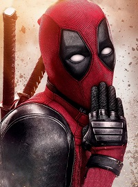
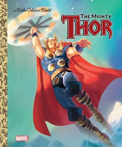
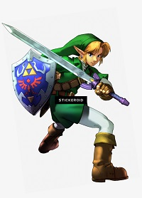

| Spiderman |
Peter Parker |

|
- Genius Intellect
- Proficient scientist and inventor
- Superhuman strength, speed, durability, agility, stamina, reflexes/reactions, coordination, balance and endurance
- Precognitive spider-sense ability, cling to most solid surfaces and webbing ability
- Utilizes wrist web-shooters to shoot spiderweb material
|
His main weakness is the Ethyl Chloride pesticide, which dulls his reflexes, speed and spider-sense. But he has been shown to be quite resistant to it. |
| Deadpool |
Wade Wilson |

|
- Healing Factor
- Superhuman Reflexes
- Superhuman Agility
- Superhuman Stamina
|
A little known fact about Deadpool is that he doesn't do so well with Gamma Radiation. Deadpool's healing factor is among the most powerful in Marvel, but if the Merc with The Mouth is exposed to excessive Gamma Radiation, his healing factor is all but gone. |
| Thor |
The Strongest Avenger or The God of Thunder |

|
- Weather Modification
- Electric Manipulation
- Nigh-Invulnerability
- Time Manipulation
|
Thor may be an Asgardian, but he certainly does have his problems and weaknesses. His biggest strength is also his greatest weakness: Mjolnir. ... In the end, if Mjolnir is destroyed, so is Thor. Thor's other weakness has nothing to do with his physical status, rather, the status of his heart. However this was proven wrong in the latest MCU movie where he recieves StormBreaker. |
| Michelangelo |
Mike or Mikey |
|
- Amplified Strength
- Amplified Fighting Ability
|
Though he may not have phsyical weaknesses like other superheros. His weaknesses are usually tied in with him and his brother's personalities. |
| Link |
Hero of Time |

|
Triforce of Courage |
There really isn't a weakness specificly talked about in the game. |